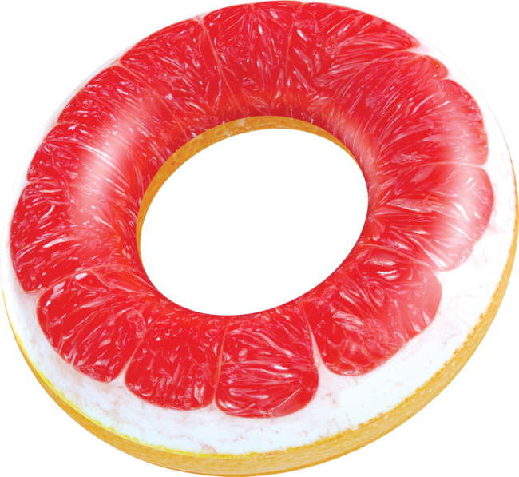
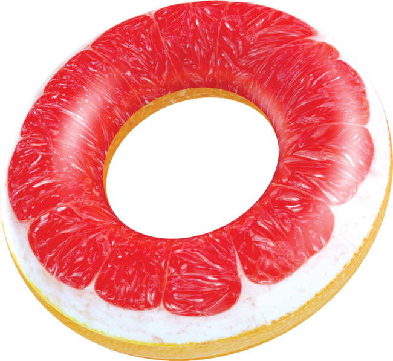
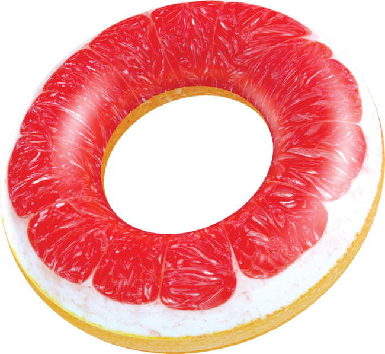

기초를 부지런히 만들어봅시다
기초를 잘 다져야 제대로 시작할 수 있습니다. 가로줄 단위로 전체 폭의 섹션을 만들고 그 안에 기준 폭을 가지는 row박스를 만듭시다.
기초를 잘 다져야 제대로 시작할 수 있습니다. 가로줄 단위로 전체 폭의 섹션을 만들고 그 안에 기준 폭을 가지는 row박스를 만듭시다.
타이틀은 가장 검색이 잘 되는 부분입니다. 따라서 명료하고 짧은 단어를 포함해서 타이틀을 정하는 것이 좋습니다.
meta description을 활용해 사이트의 설명을 헤드영역 안에 삽입할 수 있습니다. 한동안 별다른 의미가 없었지만 지난해 구글이 디스크립션의 역할을 다시 중요하게 생각하기 시작했다는 뉴스가 있었습니다. 디스크립션은 380자 내외입니다.
백그라운드 이미지를 종종 활용해 주위를 환기시킬 수 있습니다.
중앙정렬을 사용할 경우에는 br태그를 활용해 문단모양을 자연스럽게 만들어줄 수 있습니다.
기초를 잘 다져야 제대로 시작할 수 있습니다. 가로줄 단위로 전체 폭의 섹션을 만들고 그 안에 기준 폭을 가지는 row박스를 만듭시다.
기초를 잘 다져야 제대로 시작할 수 있습니다. 가로줄 단위로 전체 폭의 섹션을 만들고 그 안에 기준 폭을 가지는 row박스를 만듭시다.
기초를 잘 다져야 제대로 시작할 수 있습니다. 가로줄 단위로 전체 폭의 섹션을 만들고 그 안에 기준 폭을 가지는 row박스를 만듭시다.
지구에서 약 1000광년밖에 떨어지지 않은 곳에서 맨눈으로도 볼 수 있는 두 개의 짝별을 동반한 항성질량 블랙홀이 관측됐다. 우리은하 내에서 발견된 블랙홀은 20여개에 불과하다. 이 블랙홀은 지금까지 관측된 것 중 가장 가까운 블랙홀로 기록됐다. 유럽남방천문대(ESO)에 따르면 이 천문대 소속 천문학자 토마스 리비니우스 박사가 이끄는 연구팀은 과학저널 ‘천문학 및 천체물리학’ 최신호에 칠레 라시쟈 관측소의 MPG/ESO 2.2m 망원경으로 관측한 결과를 발표했다. 이 블랙홀은 지구에서 약 1000광년 떨어진 망원경자리에서 ‘HR 6819’로 알려진 쌍성계를 관찰하다가 발견했다. 두 별 중 안쪽 별이 40일 주기로 숨겨져 있는 블랙홀을 돌고 다른 별 하나는 멀리서 이 둘을 도는 구조로 돼 있는 것으로 관측됐다. 이 두 별은 지구에 가까이 있어 맑은 날, 어두운 남반구 밤하늘에서 망원경의 도움 없이 맨눈으로도 볼 수 있다.
논문 공동저자인 칠레 과학원 천문학자 페트르 하드라바 박사는 “이 항성계는 우리가 알고 있는 것 중 가장 가까운 블랙홀을 품고 있다”며 “우리가 관측한 것이 맨눈으로도 볼 수 있는 블랙홀을 가진 첫 항성계라는 것을 확인하고는 깜짝 놀랐다”고 했다. HR 6819 블랙홀은 주변 환경과 폭력적으로 상호작용하며 X선을 내뿜지 않아 어두운 우주에서 검은색으로만 보이는 몇 안 되는 항성질량 블랙홀로 확인됐다. 그러나 연구팀은 두 별 중 안쪽 별의 궤도를 분석해 질량을 계산했고 태양 질량의 적어도 4배 이상 되는 보이지 않는 천체는 블랙홀밖에 없다는 결론을 내렸다. 우리 은하에서는 지금까지 20여개의 블랙홀만 발견됐으나 대부분이 강력한 X선을 뿜어내 존재를 확인할 수 있었다. 하지만 우리 은하 역사를 볼 때 진화 마지막 단계에서 초신성으로 폭발해 블랙홀이 된 별은 무수히 많을 것으로 추정됐다. 이 때문에 HR 6819 블랙홀은 X선을 내뿜지 않는 조용한 블랙홀들이 어디에 숨어있는지 단서를 제공해 주는 것으로 받아들여지고 있다. 리비니우스 박사는 “우리 은하에 수억개에 달하는 블랙홀이 있는 것이 틀림없지만 관측된 것은 극소수에 불과하다”며 “어디를 관측해야 할지를 아는 것은 이를 찾아내는 것을 더 유리하게 만들 것”이라고 했다.

기초를 잘 다져야 제대로 시작할 수 있습니다. 가로줄 단위로 전체 폭의 섹션을 만들고 그 안에 기준 폭을 가지는 row박스를 만듭시다.